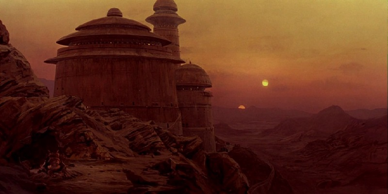
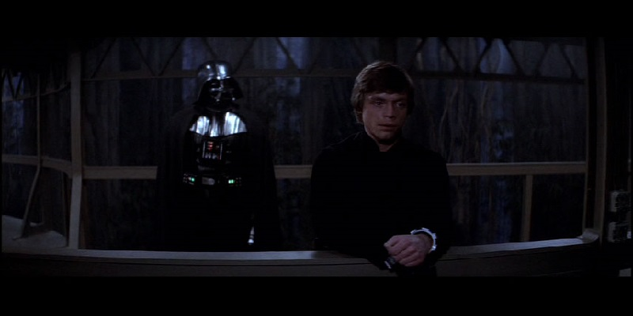

Luke Skywalker is brought before Darth Vader as the emperor ordered. Luke isn’t afraid in the slightest, standing before the dark lord, but rather calm and determined to seek out the good still left in him. Vader senses this and he begins to question siding with the dark side. Though he brushes this off in his words, the seed of doubt has been planted deep within his mind.
This scene is a battle of wits and weighs the strength of both participants. Luke represents the good trying to pull Vader back into the light and Vader fighting his inner war while trying to get Luke side with him and the emperor. I enjoy this scene in particular because of its subtlety. It’s just a conversation between a father and a son and though it includes the ignition of Luke's lightsaber, it isn’t used as a weapon.